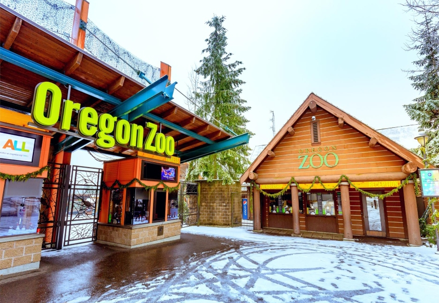

The Oregon Zoo, originally the Portland Zoo and later the Washington Park Zoo, is a zoo located in Washington Park, Portland, Oregon, approximately 2 miles (3.2 km) southwest of downtown Portland. Founded in 1888, it is the oldest zoo west of the Mississippi River. The 64-acre (26 ha) zoo is owned by the regional Metro government. It currently holds more than 1,800 animals of more than 230 species, including 19 endangered species and 9 threatened species. The zoo also boasts an extensive plant collection throughout its animal exhibits and specialized gardens. The zoo also operates and maintains the 2 ft 6 in (762 mm) narrow gauge Washington Park & Zoo Railway that previously connected to the International Rose Test Garden inside the park, but currently runs only within the zoo. The Oregon Zoo is Oregon's largest paid and arguably most popular visitor attraction, with more than 1.6 million visitors in 2016. The zoo is a member of the Association of Zoos and Aquariums, and the World Association of Zoos and Aquariums.
